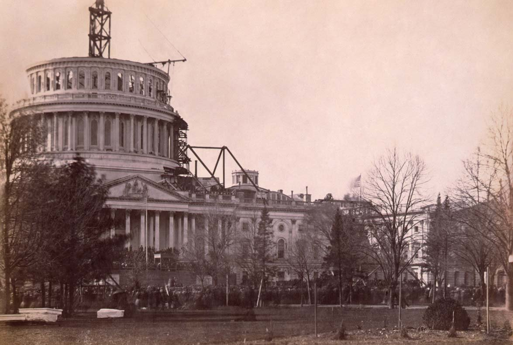
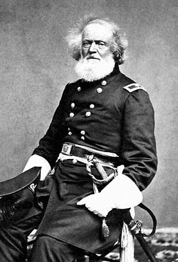
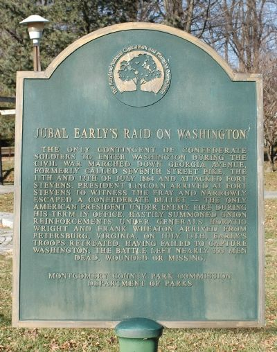

|
The Civil War drastically changed the capitol city of the
United States of America, Washington, District of Columbia.
Often called Washington City in the 19th century, it was
transformed from a small, provincial city of 63,000, in
which the nation's capitol was located, to the "Nation's
Capitol," of over 200,000. In 1860 it was a sleepy Southern
town, with muddy, dirty streets, an unhealthy, noxious
environment, and many ramshackle buildings. By 1865,
Washington D.C. was the symbol of a newly reunited country,
but more than that, a distinctly cosmopolitan place. The
former southern population was enlarged and enlivened by a
broad cross section of society - southern, northern, freed
people, businessmen, and a huge influx of middle class women
and men who came to work for expanded wartime government
agencies, and stayed to live.
Washington D.C. during the Civil War stood for the heart
and soul of the Union cause, a cherished symbol of the power
of the United States of America. President Abraham Lincoln,
the members of the cabinet and congress lived and worked in
the city, carrying on the vision of the founding fathers.
Washington D.C. was also the most tempting target for
Confederate armies. Its capture would be a brilliant prize
for the Southern cause, and citizens learned to live with
the threat of sudden invasion. Between 1861-1865 the
population almost quadrupled, the war's threat to D.C. was
demonstrated graphically by the circle of forts guarding the
city, the barracks crammed with soldiers, the shanty towns
filled with ex-slaves bringing the revolution in freedom
close to government scrutiny, and the hospitals teeming with
wounded and dying soldiers.
Situated on the banks of the Potomac River, the District
of Columbia at the start of the Civil War was composed of
several small, distinctive communities in a rural setting.
Much of the city was built on a swamp, and disease and
illness were rampant, particularly in the hot, muggy summer
months. The White House is a good example of the unhealthful
conditions experienced by many Washingtonians. It was nearby
the part of the Potomac River that met with the city canal
(the sewer), the city dump, and a slum area called "Murder
Bay." This unpleasant combination made life challenging, and
occasionally tragic, for the Chief Executive and his family.
The 1862 death of Abraham and Mary Lincoln's son, Willie,
was attributed to typhoid fever, a disease contracted
through infected drinking water.
Washington City was in an unfinished state in 1860. The
Capitol building, where Congress holds session, was
|

The unfinished Capitol building in 1862.
|
undergoing a major renovation, which included the addition
of a huge dome. When criticized for spending money on this
construction during wartime, Lincoln replied, "It is a sign
we intend for the Union to go on." On December 2, 1863 the
famous figure "Armed Freedom" was placed on top of the dome,
and by Lincoln's 2nd Inaugural the Capitol was completed.
Through the war years it also served as a fort, a barracks,
a bakery, and a hospital. The Smithsonian Institute and the
Treasury Building were also prominent structures; the latter
also housed the State Department. The Navy and War
Departments were located near the White House; Lincoln was
usually able to walk there without fear of attack.
In the tense early days of the Civil War, Washington,
D.C., was a city under siege. Though the District's
responsibilities were national, its immediate safety was
questionable. Only 100 miles from Richmond, the seat of the
newly established Confederate States of America, Washington
was set amid the beautiful tree lined hills of the Potomac
River Valley; the ten-square-mile tract of the District of
Columbia was bordered on three sides by Maryland, a slave
state with divided allegiances. Virginia, the Confederate
stronghold, bordered the fourth side.
At the outset of the Civil War, the President Lincoln
found himself and the Union government practically
defenseless in the capital city. Dire as the situation was,
it became even worse on April 19, 1861, when a confrontation
threatened to speed Maryland toward secession and isolate
the capital city. The 6th Massachusetts Regiment, the first
fully armed unit to respond to Lincoln's call for troops,
left home to defend Washington. Since no rail lines passed
all the way through Baltimore, the unit had to detrain and
march across the city to board another train. A mob formed
in the path of the soldiers and they were eventually
surrounded. Citizens began pelting them with rocks, bricks,
and pistol fire. A few men of the 6th opened fire, and a
nasty brawl ensued. By the time the regiment fought its way
to the train and out of the city, 4 soldiers and 12
townspeople lay dead.
Because of the incident, Maryland governor Thomas Hicks-a
Unionist, approved the destruction of railroad bridges into
the city. Secessionists tore down the telegraph lines that
passed through Baltimore from Washington, and the Union
capital was effectively cut off from the North. Fearing an
attack, citizens and government clerks in Washington formed
into volunteer companies. However, on the next day the New
York 7th Regiment arrived by train, having commandeered and
repaired a dilapidated steam engine in Annapolis. Other
units soon followed and the imminent danger to the capital
passed.
When Colonel Charles P. Stone set about organizing the
militias that would provide a permanent defense force for
Washington, he faced a daunting task. The regiments that
arrived in the early days of the war were impressive in
number but questionable in quality. Most were untrained and
discipline was rarely enforced. Accommodations were
insufficient; The Capitol housed the men of the 7th New York
who arrived in April of 1861. Robert Gould Shaw, a private
with the 7th, addressed a letter to his parents in this way:
"April 26, 1861, House of Representatives." He described his
experience: "That evening we marched up to the Capitol, and
|

Col. (later Maj. Gen.) Joseph Mansfield.
|
were quartered in the House of Representatives, where we
each have a desk, and easy-chair to sleep in, but generally
prefer the floor and our blankets....The Capitol is a
magnificent building, and the men all take the greatest
pains not to harm anything. Jeff Davis shan't get it without
trouble." Many soldiers also encamped in the East Room of
the White House.
The defense of Washington, D.C., proved a chronic problem
for Lincoln and his generals. From the very steps of the
White House, Lincoln could view Arlington, Robert E. Lee's
former home, a constant reminder of the danger that
surrounded the city. Even more problematic was the fact that
the city was strategically exposed, situated at the point of
the "V" formed by the Potomac and Anacostia Rivers.
Approaches into the "V" from the north abounded, bridges
provided access from the south.
Colonel Joseph Mansfield, commander of the Department of
Washington, was responsible for overseeing the construction
of fortifications outside Washington. The projects were just
underway when Union forces were defeated at First Bull Run
in July of 1861. Lincoln and other leaders, unsure of the
Confederate army's capability, feared invasion. Although it
never came, Secretary of War Edwin Stanton made it clear
that Union campaigns in Virginia would always include
provisions for the defense of Washington. George McClellan
later claimed that the policy drastically hindered his
Peninsula Campaign.
Batteries and forts eventually created a 37-mile circle
around Washington. Including Alexandria, Arlington Heights,
Chain Bridge, and Georgetown, there were 68 forts with over
800 huge cannons, typically between 700 to 1500 yards apart.
Twenty-three miles of trenches and 93 manned artillery
positions completed the ring of defense. Other important
sites such as city reservoirs, major roads into the city
from the southeast and the north, and the entrance to the
Potomac River into the city were heavily protected. If the
enemy got beyond the fort, preparations were made for the
Treasury Building to be a barricade against attack, and for
the President and his cabinet to be hidden safely in its
basement.
The strong fortifications were weakened from time to time
by a chronic problem with understaffing. The men who stood
behind the "ring of forts" numbered 30,000, sometimes more
and sometimes far less. The latter was the case in July of
1864. As Ulysses S. Grant directed the siege of Petersburg
with an eye to capturing Richmond, Confederate General Jubal
Early defeated Union forces on a march to Washington with
15,000 rebel soldiers. On July 11, Early appeared outside
the Washington defense works, five miles north of the White
House. In response to the frantic appeals of the War
|

A plaque that commemorates Jubal Early's
invasion of Washington, D.C.
|
Department, Grant dispatched the 6th Corps to Washington to
bolster the convalescents, militia, and unit remnants on
hand there. Early launched a tentative attack on July 12,
the only combat personally witnessed by President Lincoln,
who watched from Fort Stevens. Early was stopped from a
full attack by the presence of the 6th Corps, and he wisely
withdrew.
Early's near-invasion was the closest the South ever came
to attacking the Northern capital during four years of civil
war. Other challenges were nearly as great. In May of 1861
Washington had one hospital. Fourteen months later, 60
hospitals were built within the city. But it was impossible
to build enough hospitals to house the thousands and
thousands of sick, wounded and dying soldiers from the
nearby battlefields of Bull Run, Fredericksburg, and
Chancellorsville, to name a few.
The War Department had to take over hotels, churches,
schools, colleges, and homes and turn them into hospitals.
Living in Washington meant that locals were the first to
know the terrible price of each battle, as the long line of
horse-pulled ambulances deposited the bitter fruits of
carnage. After 1863 specially designed "pavilion" style
hospitals predominated. Cleaner, more efficient, the white
shed like structures could be expanded to meet the needs of
the war.
Indeed the whole city could be described as the major
supply depot for the eastern Union Army. Bakeries,
butcheries (over 10,000 cattle grazed on the grass near the
unfinished Washington Monument), warehouses for food,
clothes, and ammunition dotted the landscape.
Despite Washington D.C.'s vulnerable position during the
Civil War, President Lincoln never seriously considered
relocating further North. Overnight the city stood as a
proud symbol of the Union, the seat of governance, where
politicians, wealthy businessmen and senior military
officials discussed and planned the unfolding war; a target
for the Confederates, and their spies and sympathizers to
plot the Union's downfall; a safe haven for over 40,000
escaped, and later freed slaves; the destination for
soldiers and many of their family members; job seekers:
women and men alike to fill the thousands of new positions
the expanded wartime administration required. The immense
changes Washington D.C. underwent during the war paralleled
those of the larger nation.
Source: Joan Waugh, ed., Facts on File Encyclopedia of American
History: Civil War and Reconstruction, 1856 to 1869 (New York: Facts on
File, 2003), 388-390.
|